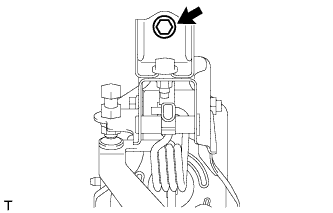
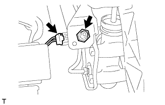
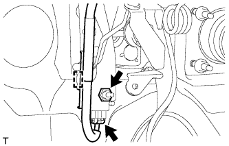
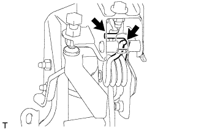

ПЕДАЛЬ СЦЕПЛЕНИЯ (для моделей с правосторонним рулевым управлением) > СНЯТИЕ |
| 1. СНИМИТЕ ПОДУШКУ БЕЗОПАСНОСТИ № 1 ДЛЯ ЗАЩИТЫ НОГ В СБОРЕ |
Снимите подушку безопасности № 1 для защиты ног в сборе (Нажмите здесь).
| 2. СНИМИТЕ ГЛАВНЫЙ ЦИЛИНДР СЦЕПЛЕНИЯ В СБОРЕ |
Снимите главный цилиндр сцепления (Нажмите здесь).
| 3. СНИМИТЕ ПЕДАЛЬ СЦЕПЛЕНИЯ В СБОРЕ |
|  |
Выверните болт и снимите педаль сцепления.
| 4. СНИМИТЕ ПУСКОВОЙ ПЕРЕКЛЮЧАТЕЛЬ МУФТЫ СЦЕПЛЕНИЯ В СБОРЕ |
|  |
Для моделей с левосторонним рулевым управлением:
Отсоедините разъем пускового переключателя муфты.
Отверните гайку и снимите пусковой переключатель муфты сцепления.
|  |
Для моделей с правосторонним рулевым управлением:
Отсоедините разъем пускового переключателя муфты сцепления и освободите зажим.
Отверните гайку и снимите пусковой переключатель муфты сцепления.
| 5. СНИМИТЕ ПРУЖИНУ СЖАТИЯ ЧАШКИ ПРУЖИНЫ МЕХАНИЗМА РАЗГРУЗКИ СЦЕПЛЕНИЯ |
|  |
Снимите пружину сжатия.
| 6. СНИМИТЕ ПЕДАЛЬ СЦЕПЛЕНИЯ В СБОРЕ |
Отверните гайку и снимите шайбу и болт.
Снимите педаль сцепления с кронштейна педали сцепления.
| 7. СНИМИТЕ ДЕРЖАТЕЛЬ ПРУЖИНЫ ПЕДАЛИ СЦЕПЛЕНИЯ |
Снимите держатель пружины с кронштейна педали сцепления.
| 8. СНИМИТЕ ПЕРЕКЛЮЧАТЕЛЬ МУФТЫ СЦЕПЛЕНИЯ В СБОРЕ (для моделей с системой круиз-контроля) |
Ослабьте контргайку и снимите переключатель муфты сцепления.
| 9. СНИМИТЕ ОГРАНИЧИТЕЛЬНЫЙ БОЛТ ПЕДАЛИ СЦЕПЛЕНИЯ (для моделей без системы круиз-контроля) |
Ослабьте контргайку и снимите ограничительный болт.
| 10. СНИМИТЕ НАКЛАДКУ ПЕДАЛИ СЦЕПЛЕНИЯ |
| 11. СНИМИТЕ ВТУЛКУ ПЕДАЛИ СЦЕПЛЕНИЯ |
Снимите 2 втулки с педали сцепления.
| 12. СНИМИТЕ ПОЯСОК ВАЛИКА ПЕДАЛИ СЦЕПЛЕНИЯ |
Снимите поясок валика.
| 13. СНИМИТЕ ПОДУШКУ № 1 ПЕДАЛИ СЦЕПЛЕНИЯ |
С помощью круглогубцев снимите 3 подушки с педали сцепления.
| 14. СНИМИТЕ ПОВОРОТНУЮ ВТУЛКУ ПЕДАЛИ СЦЕПЛЕНИЯ |
Снимите втулку механизма разгрузки с педали сцепления.
| 15. СНИМИТЕ ВТУЛКУ ВИЛКИ ШТОКА ГЛАВНОГО ЦИЛИНДРА СЦЕПЛЕНИЯ |
С помощью торцевого ключа на 8 мм и молотка снимите втулку вилки.